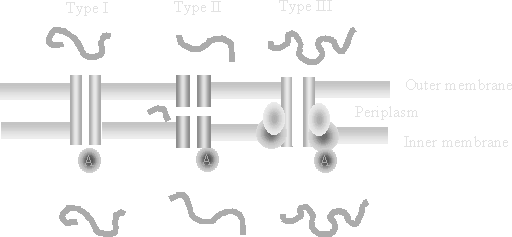

Protein Localization
- What distinct compartments exist in a bacterium?
- Where can a protein be directed in the cell?
| Destination | How you get there |
|---|---|
| Cytoplasm | Happens by default — translation is already there |
| Inner membrane | Easy for things that belong there. Done through the sec pathway (pre) |
| Periplasm | Easy for sec secretion (prepro). Alternate tat pathway for things that cannot fold there |
| Outer membrane | Happens naturally for things that naturally belong there. Difficult — but doable — for things that do not |
| Secreted | Many methods, all of them iffy. Gram positives do this much more easily |

The signal (pre) sequence
also “signal sequence”, also “leader sequence”

Leader peptidases
Prepro sequences
Beta barrel-type proteins
Autotransporters / two-partner secretion

In gram positives, like B. subtilis
Type I, II and III secretion

I want to express alkaline phosphatase from Thermus thermophilus (CAC83793.1) in the periplasm of E. coli. Do I need to alter the CDS to get proper localization?

No. It already carries a signal peptide — it is periplasmic in its own organism too, and the sec pathway is conserved enough to read it.
No, it should already go to the periplasm. A question for the room: to express Thermus thermophilus alkaline phosphatase in the E. coli periplasm, does the coding sequence need altering? The sequence is shown. The answer arrives on a click.